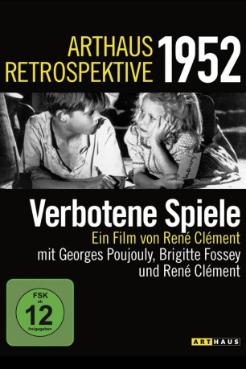

#9347 Verbotene Spiele
Alternativ: Forbidden Games (Englischer Titel)
Auszeichnungen: für 1 Oscars nominiert 1 BAFTA-Awards gewonnen
 
 IMDB-Wertung: 8.0 / 10
IMDB-Wertung: 8.0 / 10  Metascore: 0
Metascore: 0 
Ein fünfjähriges Mädchen, dessen Eltern beim Einmarsch der Deutschen in Frankreich 1940 umgekommen sind, wird von einer Bauernfamilie aufgenommen. Mit den anderen Kindern spielt Paulette "Krieg" und "Friedhof", in dem sie tote Tiere bestatten. Ein erschütternder Film, der schonungslos die Gedankenlosigkeit des alltäglichen Lebens anprangert und Pseudoreligosität denunziert.
Jahr: 1952
Dauer: 86 Minuten
FSK: 12
Land: Frankreich Studio: ArthausTonspuren:
Untertitel: Deutsch,
Auflösung: 1080p (1472x1080) Größe: 5591 MB
Genre: Drama, Krieg
Regisseur: René Clément
Drehbuch: Matthew Ballen
Soundtrack: Narciso Yepes
Darsteller:
- Georges Poujouly als Michel Dolle
- Brigitte Fossey als Paulette
 Jacques Marin als Georges Dolle
Jacques Marin als Georges Dolle- Amédée als Francis Gouard
- Laurence Badie als Berthe Dolle
- Madeleine Barbulée als Red Cross Nun (end of film)
- Suzanne Courtal als Madame Dolle
- Lucien Hubert als Dolle, the Father
- Violette Monnier als Dolle's Youngest Daughter
- Denise Péronne als Jeanne Gouard
- Fernande Roy als Gouard's Other Daughter
- Louis Saintève als Priest
- André Wasley als Gouard, the Father
- Marcel Mérovée als Raymond Dollé
- André Enard als Un Gendarme (uncredited)
- Marcelle Feuillade als La mère de Paulette (uncredited)
- Monsieur Fossey als Le père de Paulette (uncredited)
- Louis Herbert als (uncredited)
- Bernard Musson als Un gendarme (uncredited)
- Annie Ravel als Dolle's Female Cousin (at the Funeral) (uncredited)
- Georges Sauval als Cart Driver (beginning of film) (uncredited)
- Maud Slover als Lady at Refugee Center (uncredited)
- Janine Zorelli als Old Lady on Cart (beginning of film) (uncredited)
Datei: X:\1950-1959\Verbotene Spiele (1952, FSK12, 1472x1080).mkv seit 30.07.2018
Festplatte: HD 1900-1970
 Es gibt insgesamt 141 Filme in der Gruppe '1950-1959'
Es gibt insgesamt 141 Filme in der Gruppe '1950-1959'